// Вадим Черенёв · Пермь
High tech. Low life.
Ключевые показатели за весь период работы.
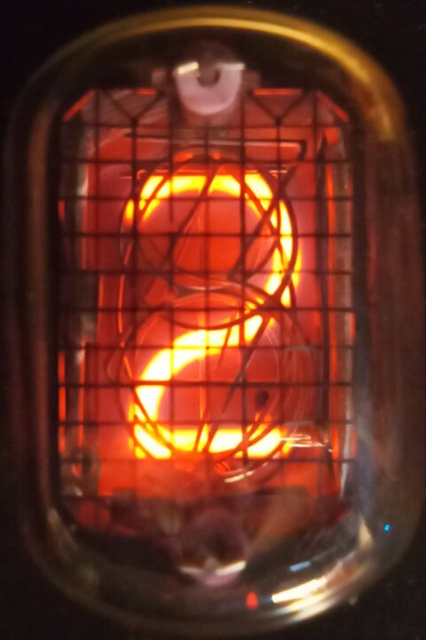
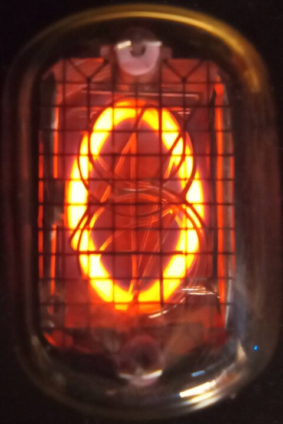
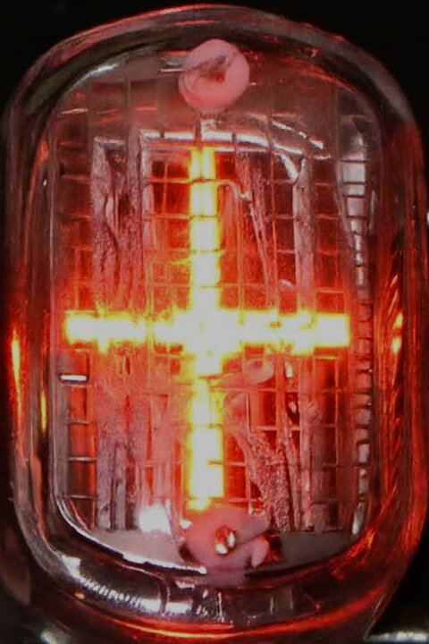
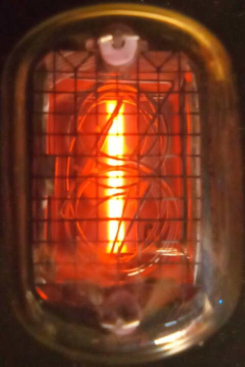
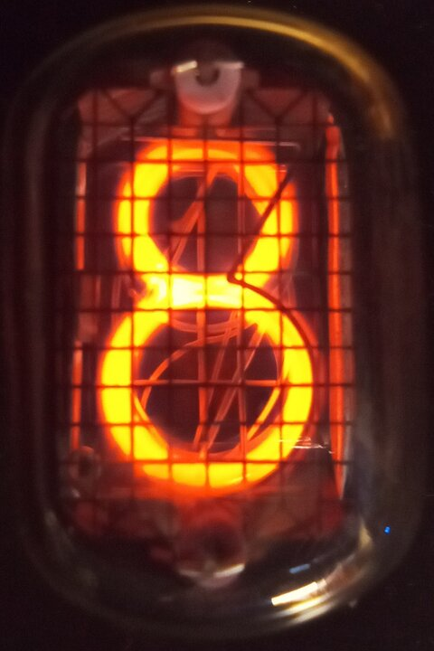
Разработка, прототипирование, отладка — всё в одном месте: от идеи до производства.
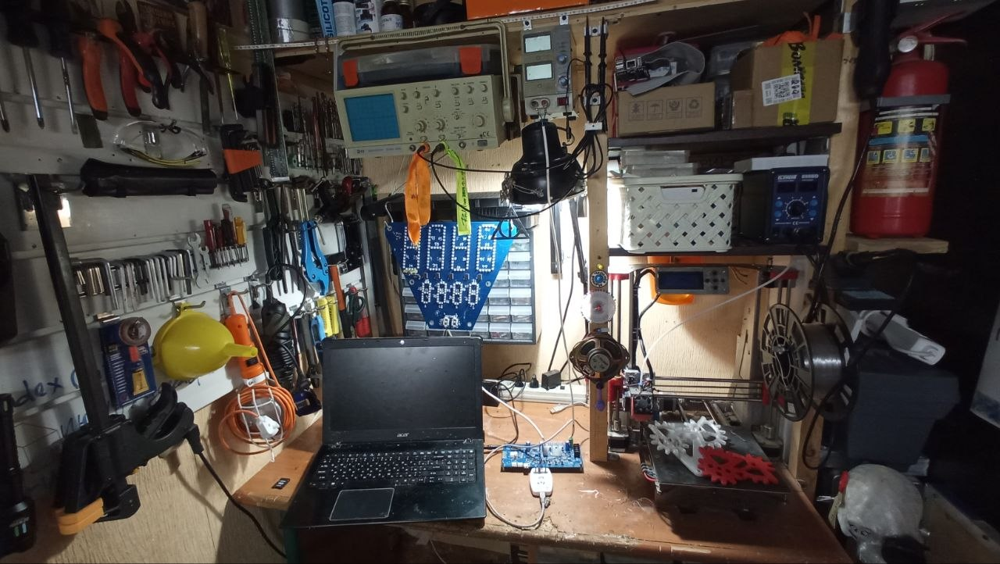
Без «под ключ» и «полного цикла»: делаю то, что умею.
Могу в сжатые сроки дендрофекальным методом собрать что угодно — от макета до печатной платы. Но результаты оно покажет средние.
Сделаю тестовые образцы, отлажу, соберу стенды, подготовлю документацию для производства. А толку? Все равно не взлетит.
А куда мне деваться: поддержка и доработки никуда не денутся. Но вам бы лучше обратиться к нормальным специалистам.
Две коммерческих линейки продуктов, в разработке которых я принимал участие. Компании в итоге проявили редкое благоразумие и перешли на проекты других разработчиков. Сами компании успешно существуют до сих пор. По понятным причинам не называю их.
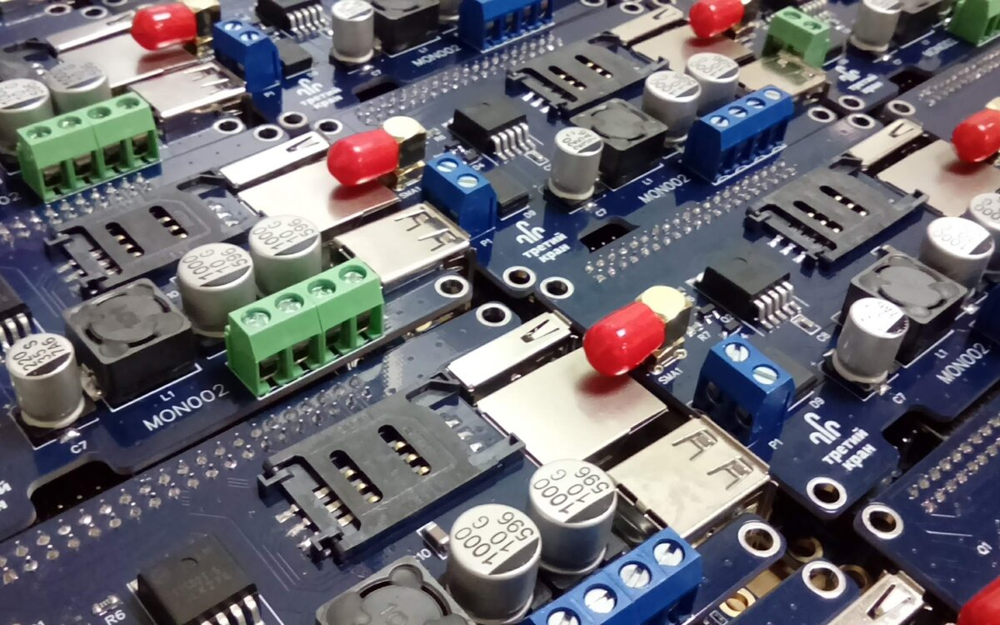
2017–2020
Вся электроника и ПО, MQTT-телеметрия и облако. Производство, документация, стенды, полевая поддержка. Тысячи установленных устройств. Пользователи из других регионов обещали найти меня и набить морду лично. Это ли не доказательство успешности проекта?
— STM8 → STM32 → OrangePi → RS485 → GSM → MQTT
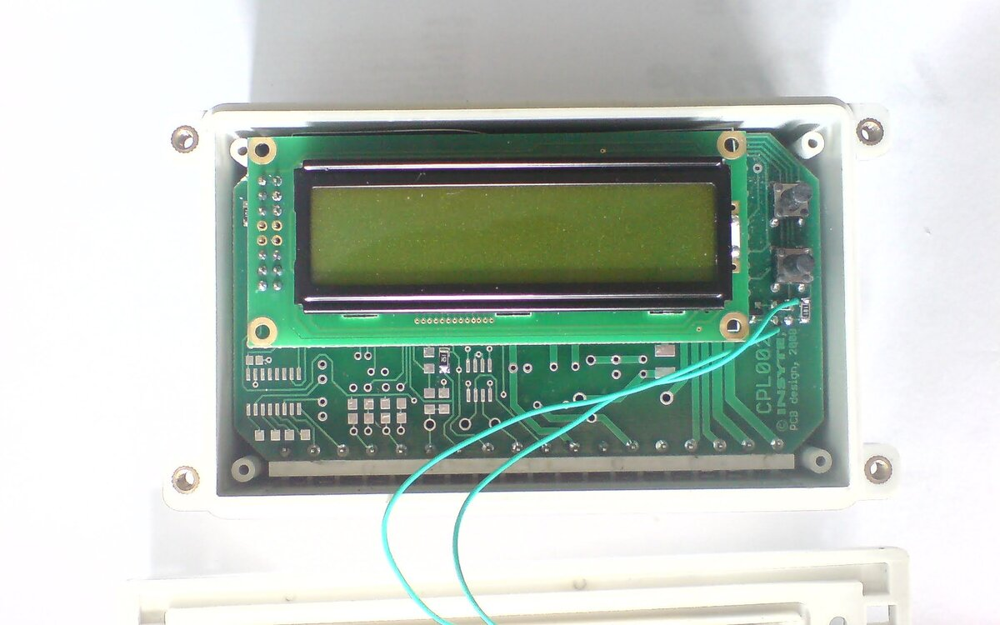
2003–2008
Этот проект начинался с моего курсача по передаче данных по силовой линии. Первая линейка в итоге не взлетела, впрочем к ней я имею весьма опосредованное отношение, а вот вторая линейка с RS485 по проводам имела успех. Сделал для нее несколько устройств.
— AVR → Modbus → ZigBee
Но что-то пошло не так.
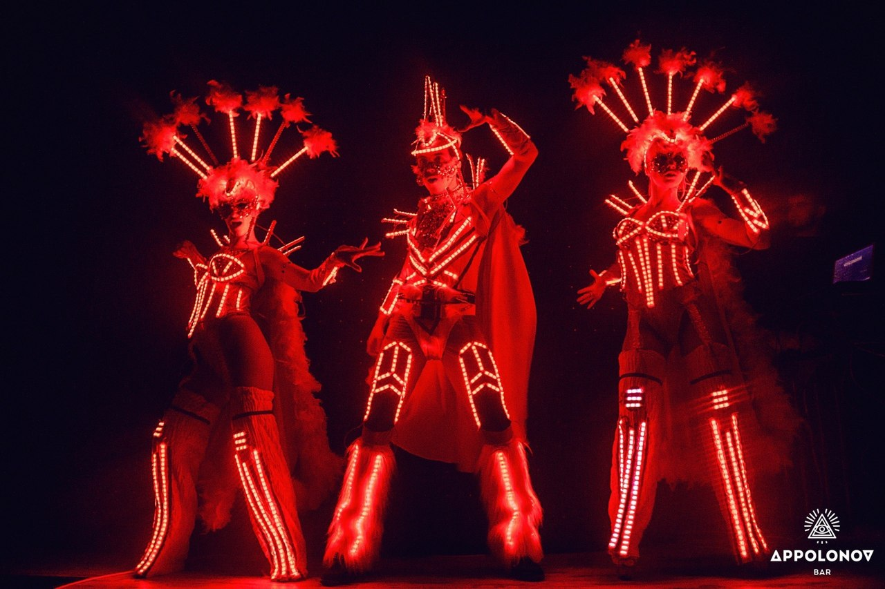
2012–2014
Светомузыка на теле: ATmega, редактор шоу и воспроизведение с SD-карты, анализ звука и положения тела в реальном времени, 24 ШИМ-канала.
— ATmega → FatFs → FHT → ShowMaker
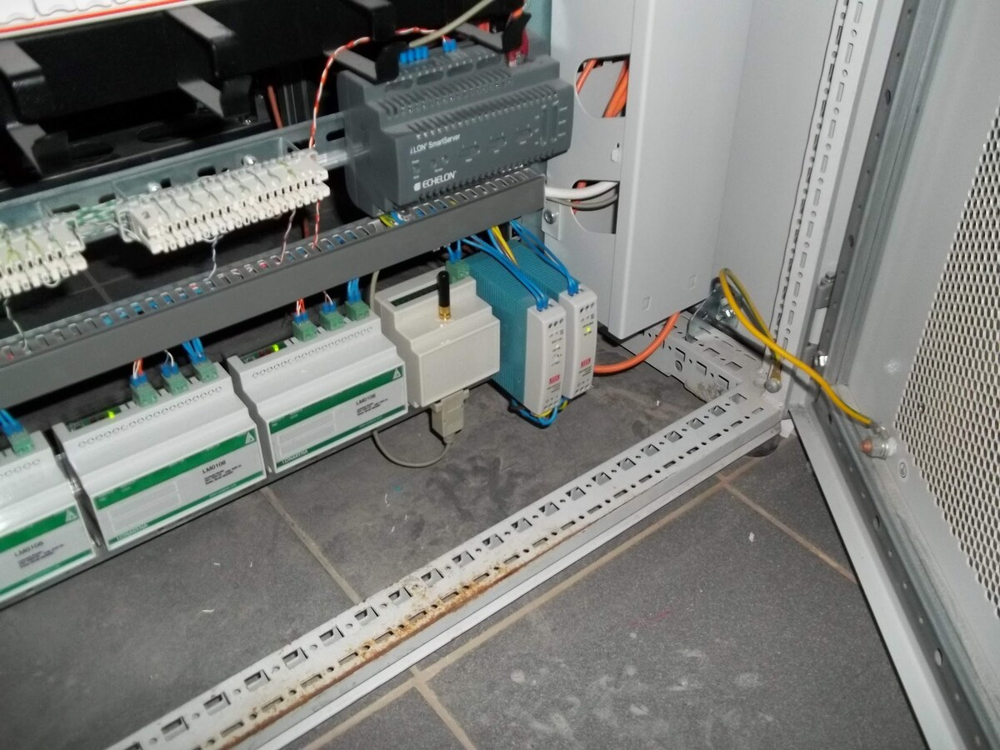
2011–2015
Телематика на ZigBee Pro mesh. Идея была в том, что устройства сами находят друг друга и попадают в общее пространство адресов ModBus.
— JN5148 → ZigBee Pro → FreeModbus
Хобби и игрушки.
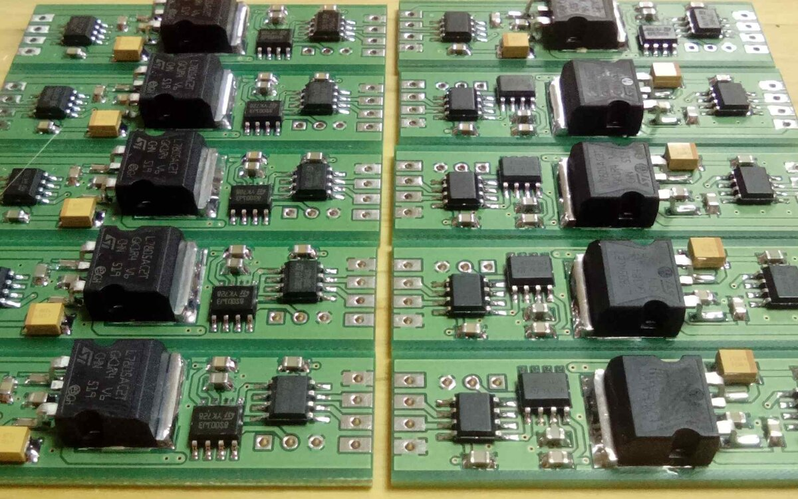
Промышленная автоматика
Невнимательно читали инструкцию, накосячили с разводкой и теперь ваша АСКУЭ не работает? Вас спасет репитер ModBus. Это не просто усилитель сигнала, а интеллектуальный агент, понимающий протокол ModBus. И всего за $5!
Не проверялся в реальных условиях
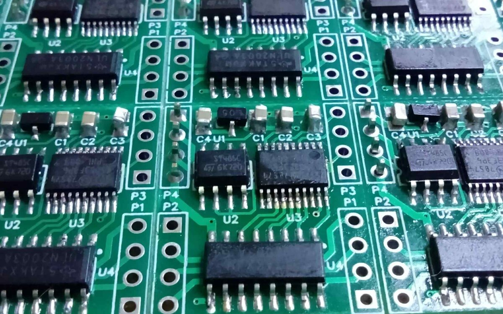
Умный дом
Самый компактный в мире ШИМ-контроллер с управлением по ModBus. Шесть каналов позволяют подключить сразу две светодиодные линейки. Компактный размер облегчает встраивание. 12 В, 500 мА на канал.
Есть мобильное приложение
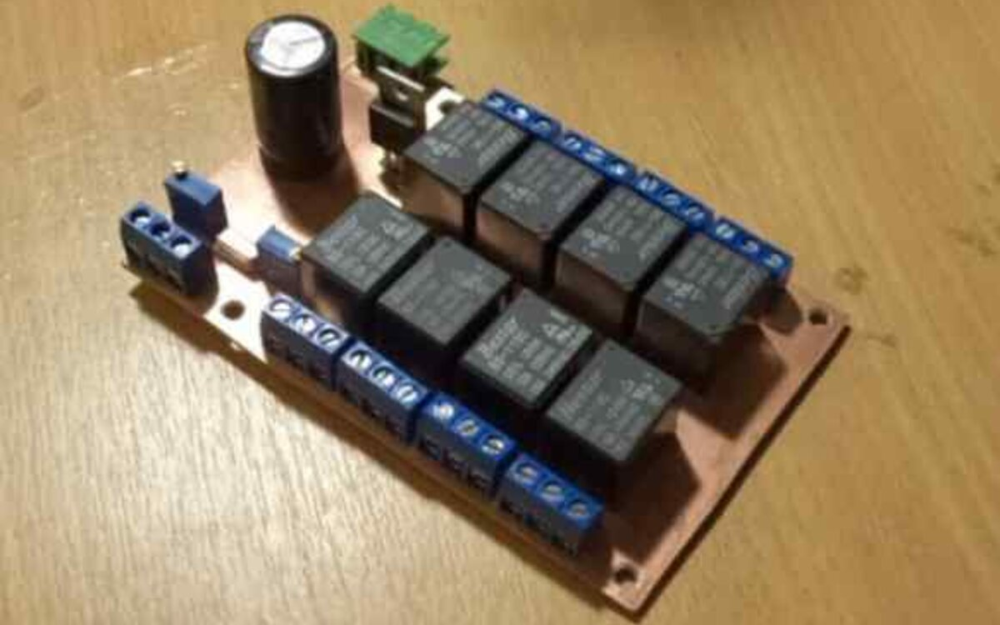
Шоубизнес
Это устройство предназначено специально для синхронизации исполнительных устройств с музыкой. Вставляйте DTMF-коды прямо в музыкальное сопровождение и получите идеальную синхронизацию без дополнительных усилий.
Не содержит микроконтроллеров
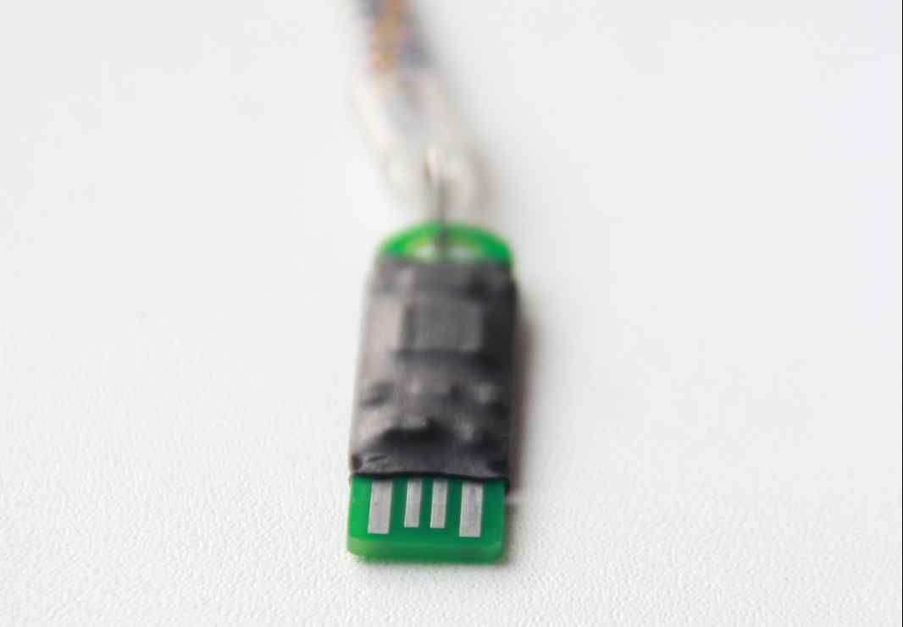
Безопасность
Простой многоцелевой программируемый USB-донгл: STM32F103 с контактами USB прямо на плате — втыкается в порт как флешка, без разъема и корпуса. Можно использовать как второй фактор или аппаратный ключ.
Ношу такой уже много лет
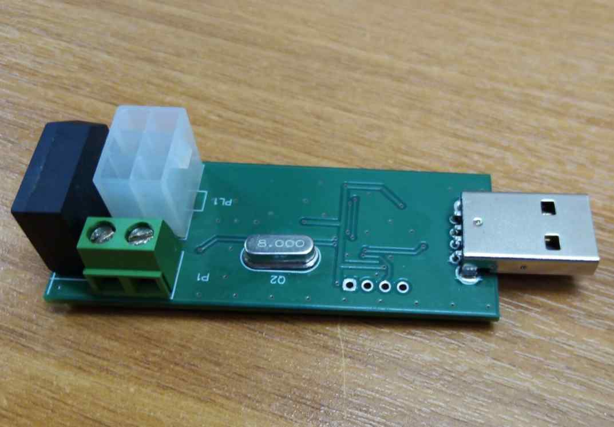
Вендинг
Плата-переводчик с MDB — шины вендинговых автоматов, на которой говорят монетники и купюроприемники, — на понятный компьютеру USB. Подключение периферии, эмуляция устройств, анализ трафика. Питание берет прямо из шины.
Самый популярный проект
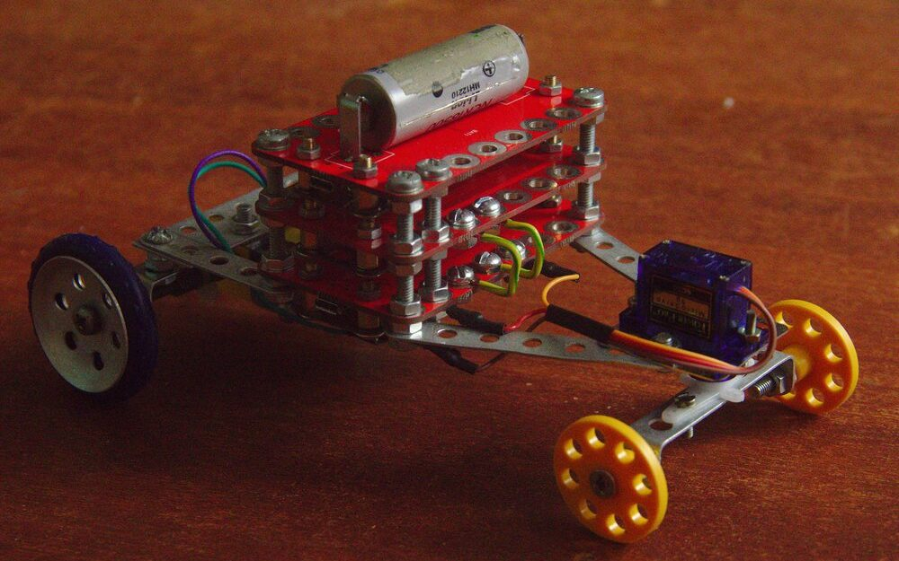
Игры и развитие
Почему у Lego есть свой программируемый микроконтроллер, а у железного конструктора с дырками нет? Я сделал такой контроллер. STM32, BlueTooth, полномостовой драйвер мотора, аккумулятор и два датчика приближения из коробки.
Бессвинцовые платы красного цвета
Эти и другие бесполезные проекты в профиле oshwlab.com/shadowlamer.
Нет смысла со мной связываться, так как времени у меня всё равно нет.